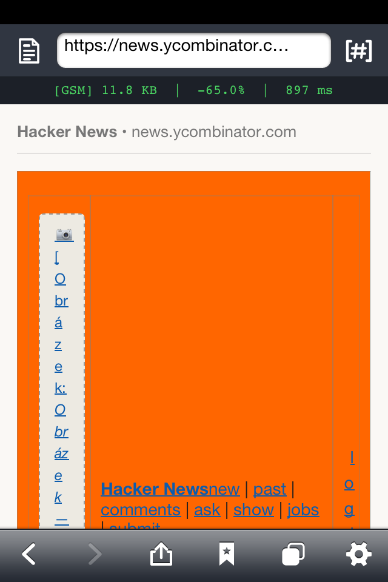
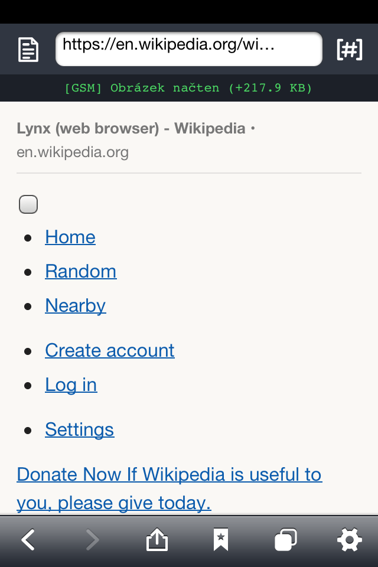
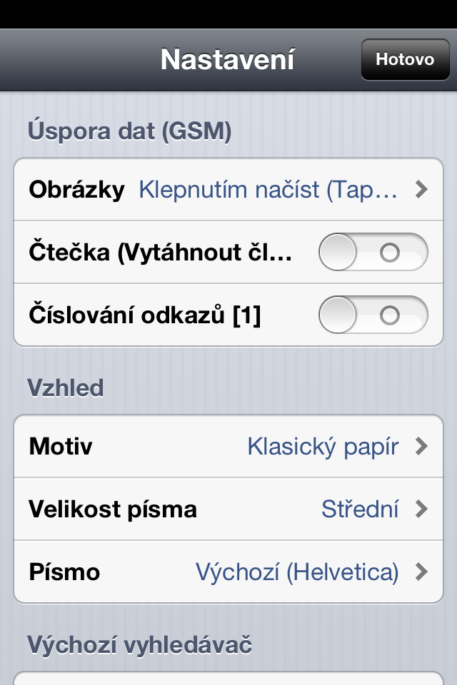
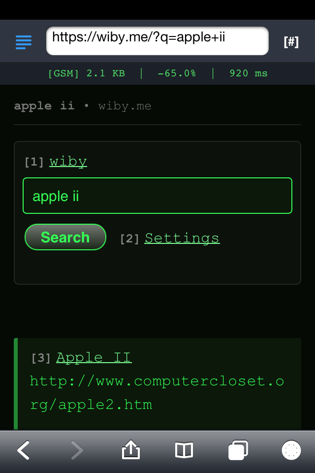

Lynxie
Ultra-fast, GSM-friendly, Zero-JS text-first web browser for iOS 5–10
Ultra-fast, GSM-friendly, Zero-JS text-first web browser for iOS 5–10
Lynxie is an ultra-fast, data-saving web browser inspired by Lynx and designed specifically for legacy iOS devices (iOS 5.0 to 10.x). Powered by a Zero-JS engine and streaming HTML parser, it bypasses heavy client-side scripts to deliver near-instant page loads and up to 95% bandwidth savings over 2G/GSM and EDGE connections. Features direct modern TLS 1.2/1.3 connections via an embedded mbedTLS stack with Mozilla root certificates, tap-to-load images with live in-place DOM rendering, reader mode, customizable vintage themes (Paper, Night, Green Phosphor CRT, Amber CRT), numbered Lynx links mode ([#]), multi-tab browsing, and full offline bookmark archiving.




Unofficial apps by samcejko, not affiliated with or endorsed by Twitch, Google, Apple, TikTok, Instagram, Meta, Spotify, Kick, NVIDIA, Mojang, Microsoft, OpenRouter, Vine, X, diVine or the Moonlight, Sunshine and Apollo projects.